Seed Cleaning
Cleaning of different seeds by removing dust, stones, mud particles and unwanted impurities.
Shrigururaghavendra Small Scale Industries
Grains of Excellence
Cleaning, processing and packing of all types of seeds and grains for farmers, traders, wholesalers and local businesses.
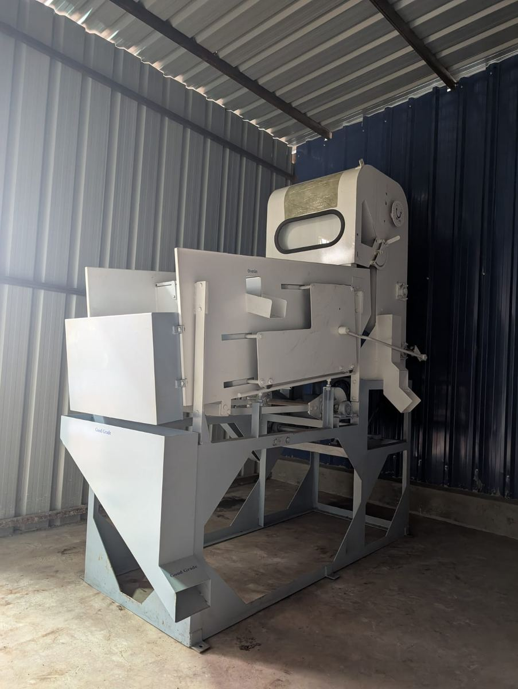
About Us
No.1 Agro Clean is a seed and grain cleaning brand of Shrigururaghavendra Small Scale Industries. We help customers improve the cleanliness, appearance and market readiness of seeds and grains using practical cleaning and processing support.
Our service is suitable for farmers, APMC traders, wholesalers, retailers and food grain businesses who need reliable job work for different quantities.
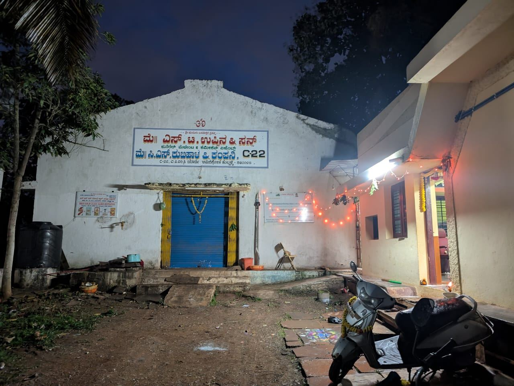
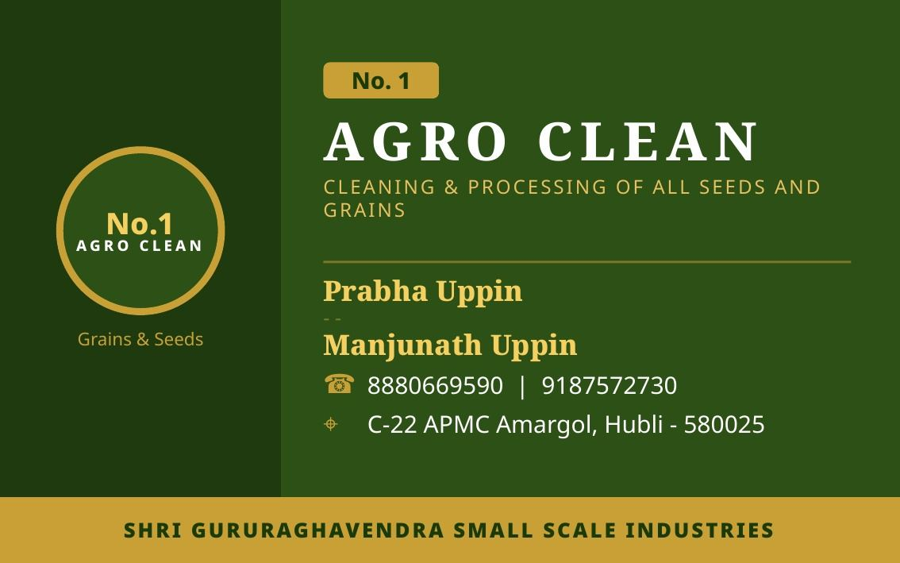
Our Services
Complete job work support for making seeds and grains cleaner, better presented and ready for customers.
Cleaning of different seeds by removing dust, stones, mud particles and unwanted impurities.
Reliable cleaning support to improve the quality and appearance of grains for market use.
Processing of seeds and grains as per customer requirement using suitable machinery support.
Packing support after cleaning and processing for storage, sale and transport needs.
Why Choose Us
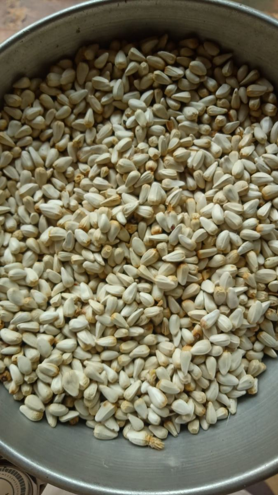
Machinery & Facility
Our facility uses cleaning and processing machinery to handle different types of seed and grain job work.
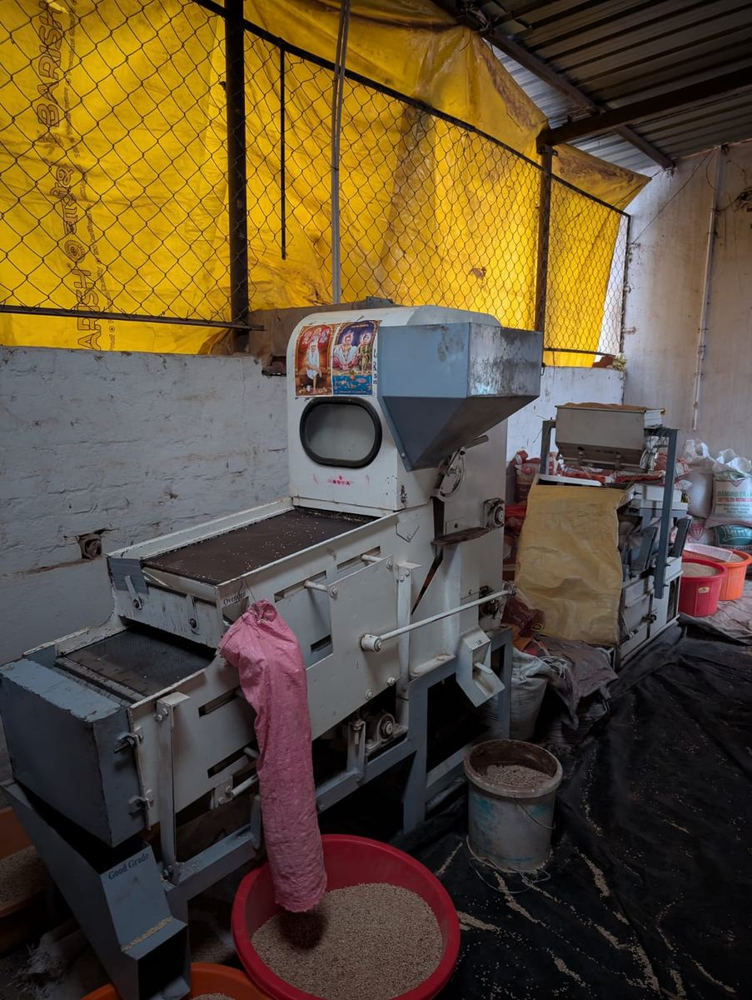
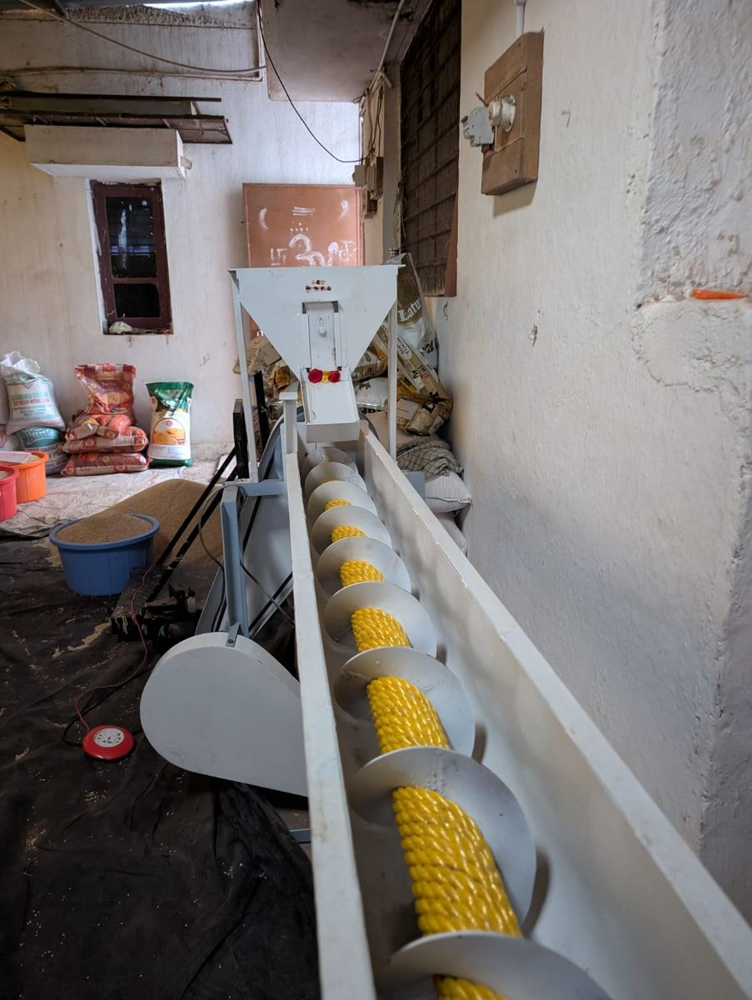
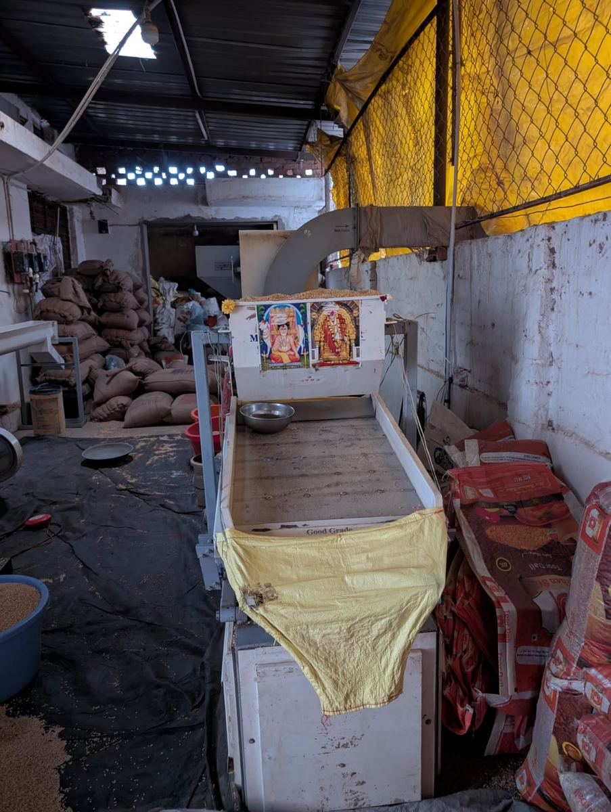
Customers We Serve
Gallery
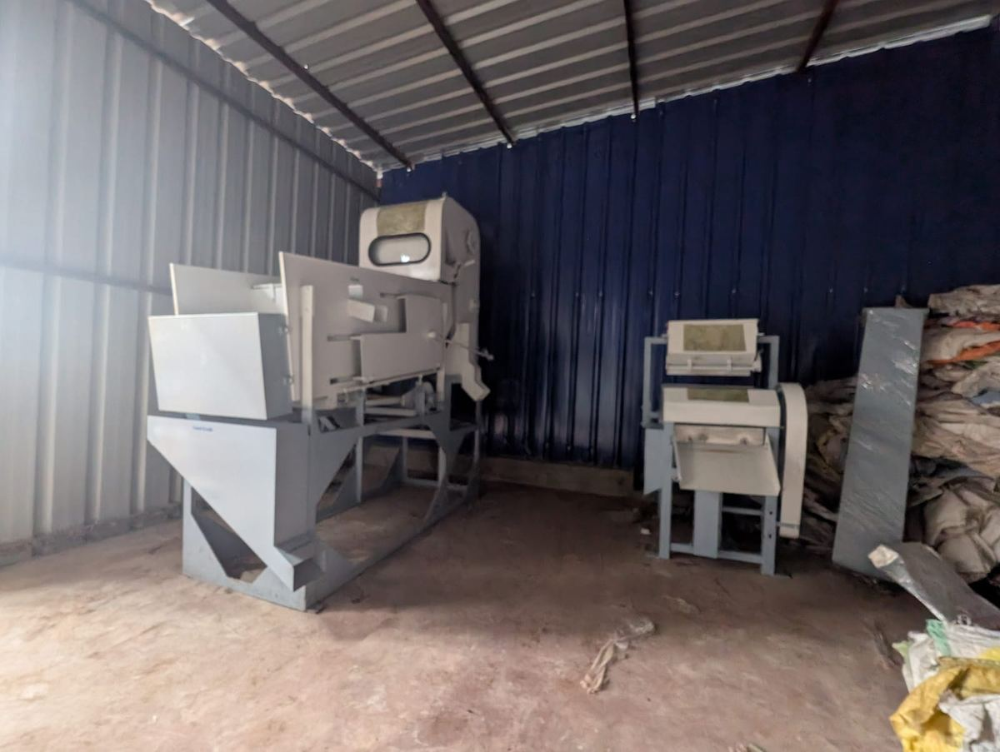
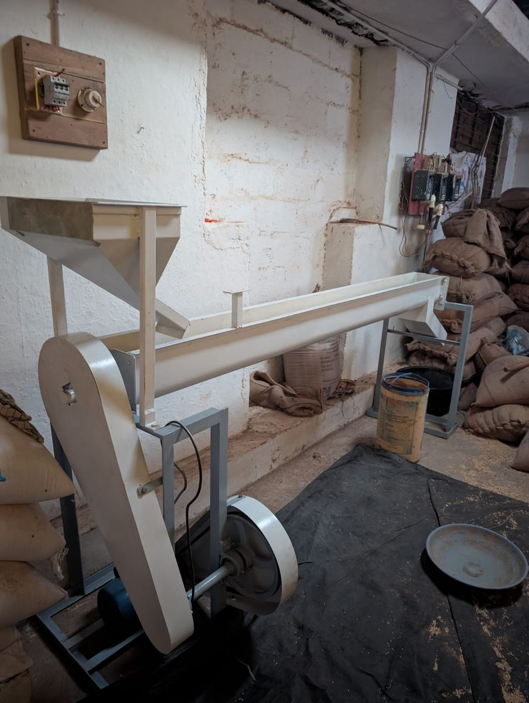
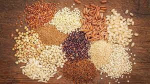
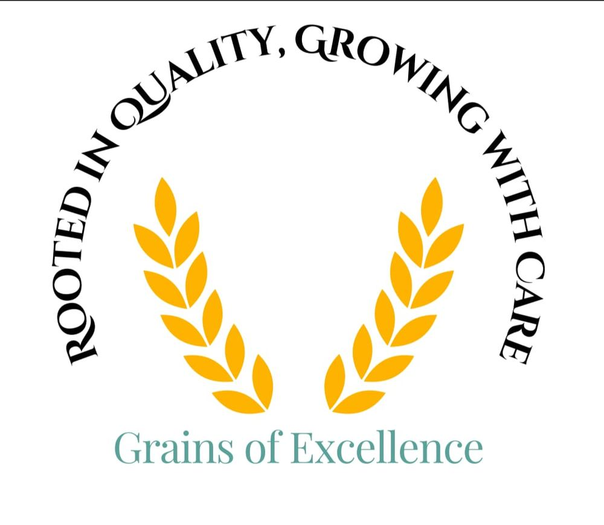
Contact Us
Contact No.1 Agro Clean for cleaning, processing and packing services for seeds and grains.